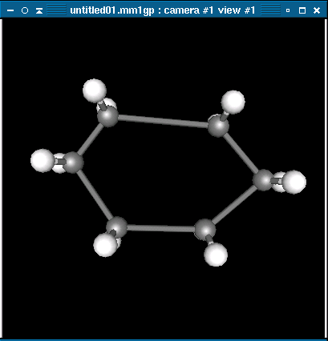

The Geometry Optimization tool will attempt to change the geometry of the current molecule into the lowest energy conformation. To activate this tool, right-click on the view window, select Compute from the popup menu, and then click on Geometry Optimization.
A dialog box called Geometry Opimization will appear. The three textboxes in the dialog box control when to end the geometry optimization. Typically only advanced users should change these fields. The "Maximum number of steps:" field represents the maximum number of iterations that should be performed before stopping the optimization. The "Gradient cutoff:" field represents how low the length of the gradient vector can be before the optimization stops. The "Delta E Cutoff:" field represents the minimum change in potential energy between steps. Each of these checks can be disabled by unchecking the checkbox to the left of each field.
Click on Ok to start the optimization. The conformation of the molecule will change slightly at each step. In the log box, rows of text will be printed. The first column indicates the step in the optimization currently being executed. The second column is the potential energy of the molecule at that step (this number will hopefully decrease). The third column is length of the gradient vector in the last step. The forth column is the change in potential energy from the previous step to the current step. The last line on the column indicates which termination condition caused the optimization to stop. "the nsteps termination test was passed." means that the optimization went though the maximum number of steps allowed. This typically means that ghemical could find a more optimum geometry if the optimization was allowed to run for longer. If an optimization terminates because of this, running a second geometry optimization might further optimize the geometry. Ghemical may also print "the grad termination test was passed." or "the delta_e termination test was passed." if the optimization stopped because of either of those conditions.
This example shows the geometry optimization of cyclohexane. Initially this molecule is planar and the bond lengths are not equal.
A geometry optimization with the standard parameters is run. The optimization stops at step 175 because the change in potential energy (delta_e) is below 1x10-7.
After optimization the cyclohexane molecule is now in the chair conformation with all C-C bond lengths equivalent.